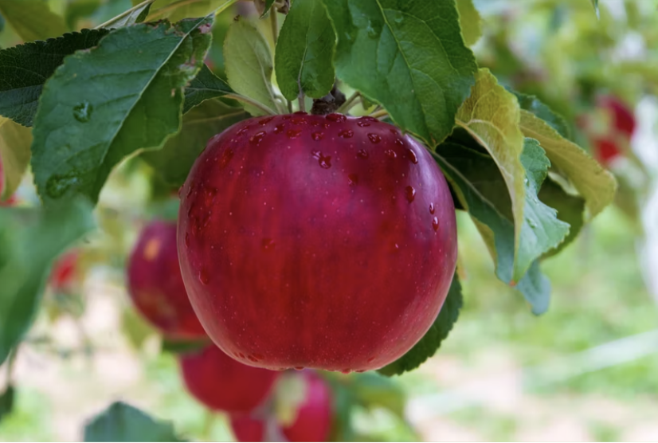
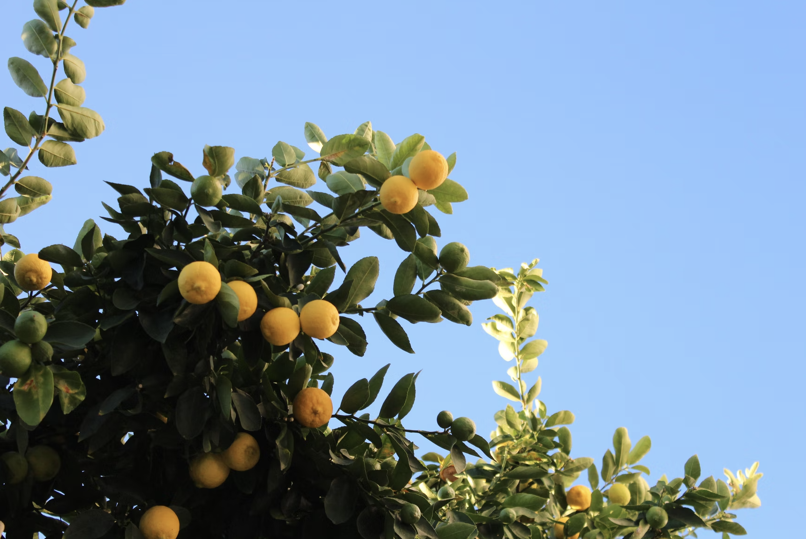
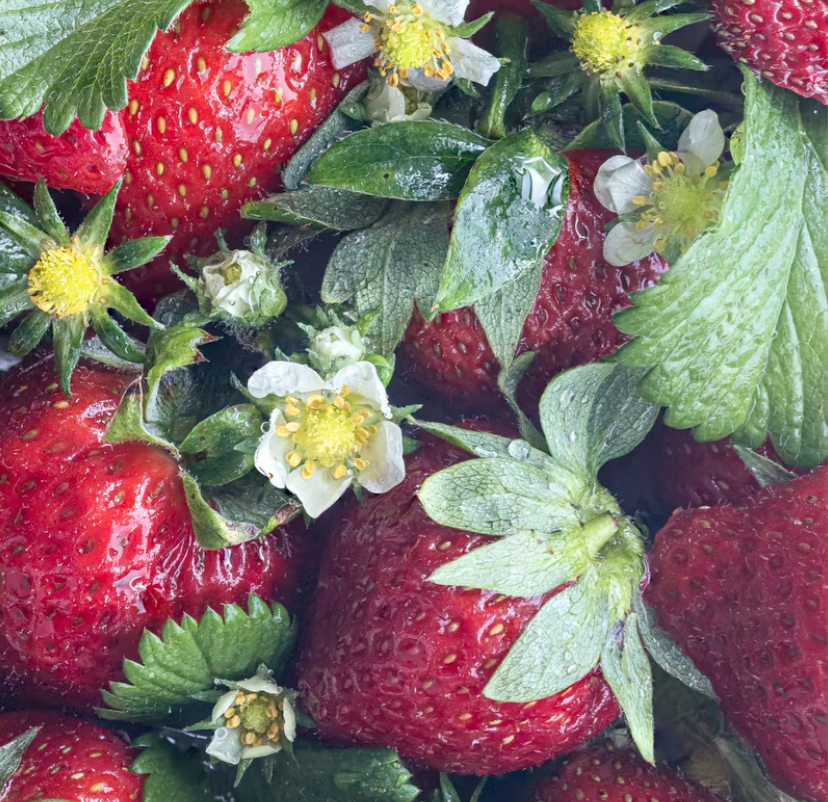

Apples

In order to start growing apples you must first make sure that you have the correct seed you want. Since apples are not true to the seed the tree you plant will grow different kinds of apples that may not taste or looks as good. You should also consider what climate you're living in since this will affect if the tree can grow or not. It is best to plant in the fall since this is the optimal temperature for apples to grow. The seeds should be planted about a half inch from the soil. Apple trees do not need to much water, however if the soil looks dry then you should rewater the area. Apples also need alot of sunlight in order to grow properly, so make sure to plant them somewhere that gets a lot of light. Make sure that the soil is loose enough for the roots to spread, and check regularly for any type of fungus.
Lemons

Lemon trees can be germinated without the use of a pot. Since lemon seeds are mostly true to the seed, choose a lemon that you feel is the best to you. Take out the seeds and let them soak in a bowl for about a hour. Next take them out and remove the shells. Then place them on wet paper towel and fold about four times. Lastly place the paper towel into a ziplock bag and keep it somewhere warm and dark. Its best to have multiple seeds since only a few might germinate. In about 7 days some of the seeds will germinate and then you can move them into a pot. Water whenever the soil is dry, and make sure to move the plant into a different pot whenever it roots outgrow its previous pot. Make sure to check for any types of fungus that could be potential damaging or harmful to your plant.
Strawberries

Strawberries are very easy to grow and are can produce new strawberries in around 2-3 months. Strawberries are true to the seed, so find strawberries that taste sweet. Next, cut off a side of the strawberry and place it in a pot of soil. The seeds are located on the face of the strawberry, so its should face upwards in order for the stem to sprout up. You can also allow the strawberries to dry out in the sun for a few days and take the seeds. Make sure to water the plant whenever the soil looks dry. Strawberry plants will give you strawberries yearly, however it is best to replace them with newer plants every 3-4 years.